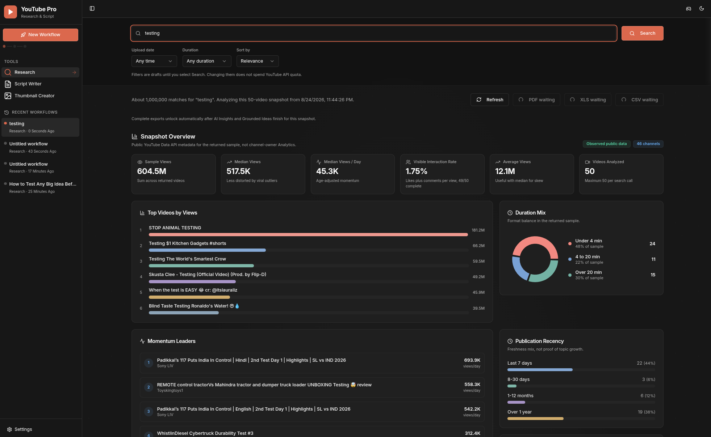
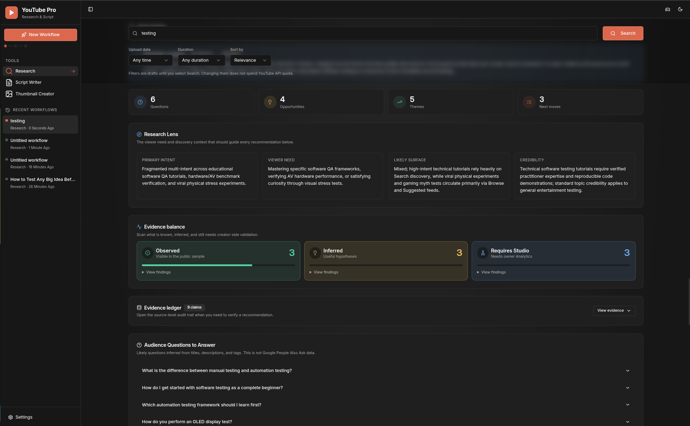
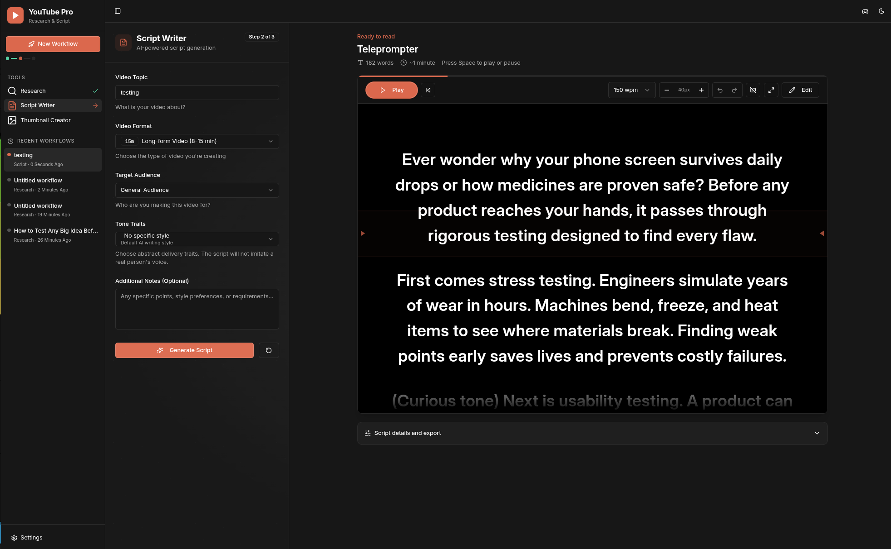
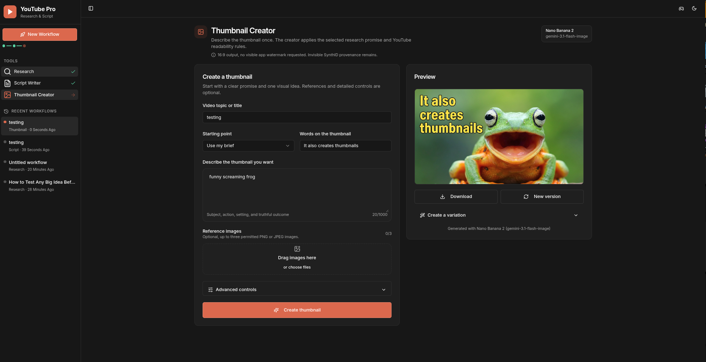

Cutroom
One connected creator workflow
From topic to ready to record.
Public evidence becomes a creative decision, then a script and package you can use.
1
Research
2
Decide
3
Write
4
Package
The creator problem
The context disappears between tools.
Search
Notes
AI
Script
Thumbnail
Too many tabs. Generic prompts. Repeated setup.
Research
Research you can inspect.
Up to 50 public videos
Sample-aware metrics
Every source visible

Public YouTube Data API snapshot03 / 07
AI Insights
AI that labels what it knows.

Observed
Inferred
Requires Studio
Evidence first. Ideas second.04 / 07
Script Writer
A script built to be spoken.
Grounded idea
Editable script
Built-in teleprompter

From research to words ready for camera05 / 07
Thumbnail Creator
Package the promise.

Minimal visual brief
Optional references
Resume recent workflows
One promise, carried through production06 / 07
Cutroom
The honest promise
Public evidence. Human judgment. One workflow.
Independent, local-first, evidence-aware, and under private review before a wider release.
Subscribe and comment “Cutroom”